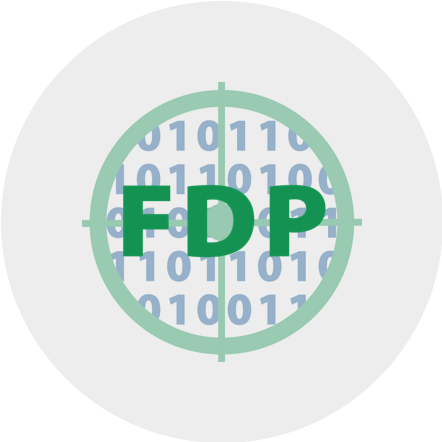

We create things. This is how they get shared with the world.
Openness
Firstly, we endeavor to do as much work as possible in public to encourage transparency, honesty, and to support open science.
FAIR Principles
We strive to adhere to FAIR Principles, meaning we aim to develop and provide digital assets that are Findable, Accessible, Interoperable, and Reusable using the FAIRification Framework:
Metadata for Machines (M4M)
FAIR Implementation Profile (FIP)
FAIR Data Points (FDP) & FAIR Digital Objects (FDO)
M4M
FIP

FDP
Figure 7.1: The FAIRification Framework
Open Science Framework
In this vein, this book is open source and our projects are, when feasible, registered and tracked using the Open Science Framework supported by the Data Cooperative through the University Libraries at the University of Arizona. The OSF “is a research collaboration platform that is freely available to all researchers. It allows for the management and sharing of research projects at all stages of research.”
Through the OSF and field-specific preprint servers (i.e., SocArXiv, EdArXiv, et cetera), all publications that can legally be provided publicly via these services will be.
Research fellows–faculty and student, alike–should create OSF profiles to allow for transparent and clear attribution.
…serves as the institutional repository for non-traditional scholarly outputs resulting from research activities by University of Arizona researchers. Depositing research materials (datasets, code, images, videos, etc.) associated with published articles and/or completed grants and research projects into ReDATA helps UA researchers ensure compliance with funder and journal data sharing policies as well as University data retention policies.
Given the nature of the work done in the MA{VR}X Lab, some content (large video recordings, for example) may be stored elsewhere. Links to data will regardless be linked within OSF projects.
Writing
Markdown (specifically, Quarto)
papaja when APA formatting is absolutely required
Zotero
Obsidian (for your notes)
The importance of writing about your ideas and work cannot be overstated. Take it seriously, do it often, and get others involved.
Publishing
The MA{VR}X Lab is, at heart, a research entity devoted to applied research. This is, of course, not to say we aren’t interested in or willing to support purely theoretical or exploratory research, especially when it is conceptualized as leading to concrete applications.
Conferences
You are encouraged to present research at conferences. The lab has a small budget to assist in students’ research presentation.
This is a list of conferences that those affiliated with the lab have attended, presented at, helped organize, or simply encourage knowing more about:
(List of conferences goes here!)
Newsletter
The lab also has a newsletter, MetaMeta, that goes out weekly.
Important
Note that the newsletter’s platform, Revue, has shuttered. We will be exploring precisely what this means for the lab.
Authorship
To transparently and fairly maintain a record of contributions, the lab follows the CRediT - Contributor Roles Taxonomy. These roles are as follows:
Conceptualization
Data curation
Formal Analysis
Funding acquisition
Investigation
Methodology
Project administration
Resources
Software
Supervision
Validation
Visualization
Writing – original draft
Writing – review & editing
Including a spreadsheet in your project directory that keeps track of who is fulfilling which role is required. Note that some roles may not be applicable (a student working on a self-directed project likely could ignore the Funding acquisition role, for example).
Contribution
What counts as a contribution? Keep in mind that the CRediT taxonomy above is not a checklist insofar as it is not binary; making some punctuation changes in a manuscript, while technically “editing,” does not necessarily qualify you for the Writing - review & editing role. You should consider contributions to be substantive and meaningful.
To be considered an author on a publication, you should have:
designed one or more experiment or survey instrument,
wrote the initial draft for a major section,
wrote the entire paper, and/or
designed and carried out the analyses.
This is not to say that not having been involved to this degree means your work goes unappreciated or unacknowledged. For example, to receive named recognition in the author note or acknowledgements section, depending on the type of publication, you might have:
Author order is not arbitrary, nor is it necessarily simply a descending list based on effort, at least the first and last author positions, specifically. That is, when involving student researchers, the first author typically goes to the student that wrote the majority of the paper, while the last author is the faculty research advisor, principle investigator, or the lab director (if they provided guidance).
Note that there is typically also a corresponding author, who is essentially the point-of-contact for the work. They are the shepherd for that particular project and are in charge of correspondence. This is typically the first or last author.
Within the MA{VR}X Lab, there are generally four kinds of publication authorship considerations:
If the director or a faculty research fellow designed the experiment/project and was responsible for most of the authoring, they will be first and corresponding author.
If a student researcher assisted in some the research (by carrying out some of the experimentation, for example) under the supervision of the director or a faculty research fellow but the student was not responsible for the research design and/or writing most of the paper, the same applies from #1.
If a student researcher was primarily/entirely responsible for designing and conducting research, and wrote most of the paper, all under the supervision of the director or a faculty research fellow, the student researcher will be first author and the director or faculty research fellow will be last and corresponding author.
Authorship with graduate students is usually decided on a one-by-one project basis. Discuss this with your supervisor.
Generally speaking, if lab resources are being utilized, the director should have at least some advisory role in the publications or products and will likely default to last author.
Minda, John P, and Emily Nielsen. 2018. “Lab Manual.” OSF. osf.io/8b6kj.
This policy is, like much of this document, heavily influenced by Minda and Nielsen (2018) to the extent that drawing attention to it again is warranted.↩︎